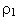
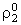
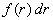
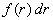
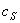
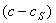
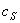
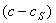

|
2.1. Уравнения модели.
Рассмотрим емкостной кристаллизатор периодического действия,
в котором происходит процесс массовой кристаллизации за счёт охлаждения раствора. Математическая модель
данного процесса базируется на законах сохранения массы, импульса и энергии. Так как рассматривается
аппарат идеального смешения, то можно допустить, что все градиенты (концентрации, температуры)
отсутствуют и скорости частиц не меняются.
Математическая модель процесса массовой кристаллизации, протекающего в емкостном кристаллизаторе, имеет вид:
уравнение изменения концентрации раствора
уравнение изменения температуры в реакторе
уравнение баланса числа частиц
выражение для скорости роста кристалла
начальные условия
граничное условие к уравнению (15.4)
Здесь t - время; с - концентрация кристаллизующегося компонента;
Т - температура;  - плотность раствора;
 - плотность кристалла;
C1T , C2T - теплоёмкости раствора и кристалла, соответственно;
 - скорость роста кристаллов;
 - число кристаллов в единице объёма смеси с размером от r до r + dr;
R - наибольший размер кристалла; r0 - размер зародыша; I - скорость зародышеобразования; - скорость роста кристаллов;
 - число кристаллов в единице объёма смеси с размером от r до r + dr;
R - наибольший размер кристалла; r0 - размер зародыша; I - скорость зародышеобразования;
 H - тепловой эффект процесса; К - коэффициент теплопередачи; F - поверхность кристаллизатора;
Тх - температура хладагента;
 - равновесная концентрация раствора;
 - пересыщение раствора;
Sr - поверхность кристалла размером r; k2 - кинетическая константа скорости роста кристалла;
k1 - кинетическая константа скорости зародышеобразования; m, p - показатели степени при пересыщении. H - тепловой эффект процесса; К - коэффициент теплопередачи; F - поверхность кристаллизатора;
Тх - температура хладагента;
 - равновесная концентрация раствора;
 - пересыщение раствора;
Sr - поверхность кристалла размером r; k2 - кинетическая константа скорости роста кристалла;
k1 - кинетическая константа скорости зародышеобразования; m, p - показатели степени при пересыщении.
Равновесную концентрацию в небольшом диапазоне изменения температур можно представить в виде:
где a, b - константы.
|